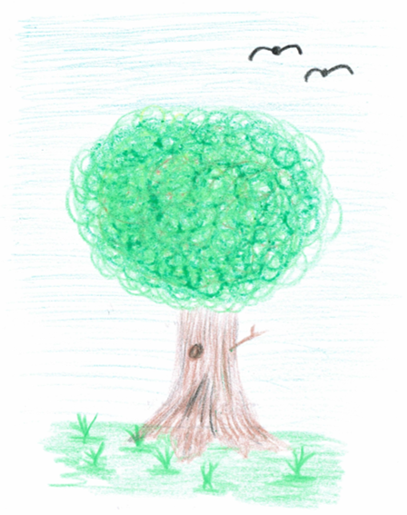
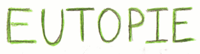

Die Grundidee unseres Projekts zum 68. Europäischen Wettbewerb besteht darin, das Konzept einer Smart City
näherzubringen. Dabei präsentieren wir zum einen unsere Vision einer solchen intelligenten Stadt im Jahr 2050,
um zu zeigen, welche Möglichkeiten sie bietet. Zum anderen wollen wir auch das exakte Gegenteil darstellen,
welches dazu dienen soll, auf die Gefahren aufmerksam zu machen. Technik und Innovation scheinen nämlich erst
einmal etwas Gutes zu sein, doch wenn es in falsche Hände gerät, wird es mehr zum Fluch als zum Segen. Daher
werden im Folgenden acht Bereiche und ihr mögliches Aussehen in zwei unterschiedlichen Szenarien thematisiert,
einmal in einer Eutopie, und einmal in einer Dystopie. Zunächst soll aber erst geklärt werden, womit es sich bei
diesen beiden Begrifflichkeiten auf sich hat.
Was ist eigentlich eine Eutopie?
Bei einer Eutopie ist die Rede von der Vorstellung einer Zukunft, die nicht an zeitgenössische
historisch-kulturelle Rahmenbedingungen gebunden ist. Diese Fiktion zielt besonders darauf ab, eine
außerordentlich schöne Welt mit einer Idealgesellschaft darzustellen.
Dies kann dazu dienen, um derzeitige soziale Organisationen zu kritisieren, auf Fehler hinzudeuten und die
Menschen dazu zu ermutigen, das gegenwärtige System zu hinterfragen und die Notwendigkeit von Veränderungen zu
erkennen. Andererseits bringen Eutopien auch eine Anleitung für eine bessere und fortgeschrittenere Welt, die
eine tolle Aussicht auf die Möglichkeiten und das Potenzial gibt, welches in einer ambitionierten und
kooperativen Gesellschaft steckt.
Was ist eigentlich eine Dystopie?
Eine Dystopie stellt im Grunde genommen das exakte Gegenstück zu Eutopie dar. Sie bezeichnet ebenfalls ein
Zukunftsszenario, das so in dieser Form höchstwahrscheinlich niemals stattfinden wird. Dieses sieht jedoch sehr
finster aus und endet in der Regel böse.
Dystopien werden in erster Linie dazu verwendet, um abzuschrecken und vor Gefahren zu warnen, die möglicherweise
eintreten, wenn jetzt nichts dagegen unternommen wird. Sie können aber auch dann in Betracht gezogen werden,
wenn man sich mit der Realität auseinandersetzt, sachliche Berichterstattungen in Frage stehen und Prognosen
wertlos erscheinen.
Abschließend lässt sich sagen, dass es sehr von den Menschen abhängt, ob Smart Cities etwas Gutes oder etwas
Schlechtes für die Zukunft bringen. Entweder werden aktuelle gesellschaftlichen Probleme nicht behoben und
dadurch nur vergrößert, oder Smart Cities bringen viele positiven Veränderungen für die Gesellschaft.
So
kann es vor allem durch den staatlichen Missbrauch der neuen Technologien und durch das Ignorieren der
aktuell immer wichtiger werdenden Umwelt dazu führen, dass wir in naher Zukunft schon mit vielen
Konsequenzen zu kämpfen haben.
Die Intention dieses Projekts ist, die aktuellen, bedenklichen
Entwicklungen in unserer Gesellschaft aufzuzeigen und mit zugespitzten Szenarien vor deren Folgen zu warnen.